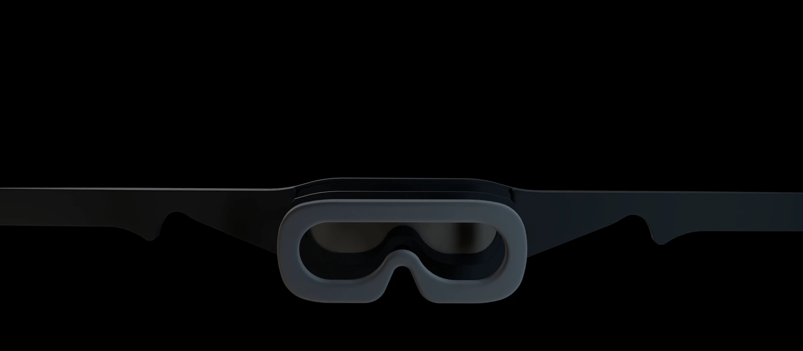

In development. Final features and pricing may change.
01 / THE MASKSCIENCE, MADE WEARABLE
Less on your nightstand. More in your night.
Sleep trackers tell part of the story. We’re building a mask that brings together the signals, the environment, and the understanding—at a price designed to be accessible.

01 / 04DESIGN VISUALIZATION
01 / MADE TO DISAPPEAR
Technology you can settle into.
A flexible structure. An adjustable magnetic strap. A removable, washable cushion. Designed around a simple idea: a sleep wearable should feel at home on your face.
FLEXIBLE CONSTRUCTIONREMOVABLE CUSHION
Materials, fit, and side-sleeping comfort are being tested.02 / LISTEN TO THE SIGNAL
A closer look at your sleep.
Planned EEG and EOG contacts measure electrical signals associated with brain and eye activity. Together with optical and movement sensors, they’re designed to help estimate sleep stages.
EEG + EOGON-DEVICE PROCESSING
Sleep-stage estimates require validation on the integrated mask.03 / SOUND WITH INTENTION
More than background noise.
Integrated stereo speakers are being developed for timed audio. We’re exploring how sound cues can work with sleep-stage estimates, rather than running on a fixed clock alone.
INTEGRATED AUDIORESEARCH IN PROGRESS
Effects on sleep onset and deep sleep have not yet been established for this product.04 / YOUR OWN SUNRISE
Let the morning come to you.
Diffused LEDs are designed to bring a gradual wake light into the mask. A companion app will help you explore sleep patterns and learn the science behind a more intentional routine.
SUNRISE LIGHTCOMPANION APP
Wake timing and light settings remain in development.
THE DETAILS MATTERINTEGRATED BY DESIGN
⌁
Charge. Rest. Repeat.
Wireless charging, with a charger planned in the box. Fewer things to think about at the end of the day.
◌
Understand the night.
A planned companion app for sleep summaries, patterns over time, and clear explanations beyond a single score.
↗
Accessible from day one.
A $99 target price and no planned subscription for the mask’s app and sleep data. Affordability is part of the design.
DeltaLabs is developing a consumer wellness product. It is not a diagnostic device or a treatment for insomnia, sleep apnea, or other medical conditions. Product outcomes have not yet been clinically established.
02 / WHY SLEEPBIOLOGY DOESN’T TAKE THE NIGHT OFF
You’re asleep. You’re not offline.
Sleep is an active biological state. It supports learning, attention, immune function, and metabolism. It’s the foundation that the rest of your day is built on.
A NIGHT IN MOTIONILLUSTRATIVE SIGNAL / NOT DEVICE DATA
WAKELIGHT SLEEPDEEP SLEEPREM
14 nights
The deficit you may not feel.
In a controlled study, restricting time in bed to 4 or 6 hours for two weeks caused accumulating cognitive deficits. Participants were largely unaware of how impaired they had become.
Your internal clock helps determine when you feel alert and when you can sleep. Light reaching the eyes is a powerful timing signal; the timing of exposure matters.
In a small laboratory study, five evenings of four-hour light-emitting eReader use delayed melatonin timing by about 1.5 hours versus printed books. Exposure conditions matter.
Sleep makes animals vulnerable. Yet across very different species, evolution has produced extraordinary ways to preserve it.
01 / FRIGATEBIRDS
Sleep. On the wing.
Brain recordings showed great frigatebirds sleeping in flight, with one hemisphere or both. They averaged just 42 minutes of sleep per day in the air—far less than on land.
Mallards at the exposed edge of a sleeping group increased one-hemisphere sleep and directed their open eye outward, keeping watch for approaching threats.
Remarkable adaptations, not a prescription for human sleep. Different species have very different sleep needs.
04 / THE PEOPLE BEHIND THE MASK
Two builders. One shared obsession.
DeltaLabs began with a sleep course, an engineering question, and a conversation between longtime friends. Grant brings the hardware. Mo brings the software. Together, we’re building a more accessible way to understand the night.
The mask is in development and is not yet available for purchase. Launch timing, shipping dates, and final specifications have not been announced. This site does not take orders or payments.
What does the $99 target include?＋
The current plan is a mask, a wireless charger, and access to the companion app and sleep data without a subscription. The $99 figure is a target retail price; final pricing, shipping, and taxes will be confirmed at launch.
Has the product been clinically validated?＋
Not yet. Work on sensing circuits and sleep-stage models is underway. Published sleep research informs the design, but does not establish this mask’s accuracy or prove that it improves sleep. Integrated validation and comfort testing remain ahead.
Will it treat insomnia, sleep apnea, or jet lag?＋
No treatment or diagnostic claim is being made. Timed sound, wake light, and sleep education are intended features under development. Persistent sleep problems, loud snoring, or excessive daytime sleepiness deserve a conversation with a qualified clinician.
How will my sleep data be handled?＋
On-device signal processing is the current design direction. The final privacy policy, microphone controls, storage, retention, and app permissions will be published before user testing or launch. This static website has no analytics, signup database, or tracking cookies.